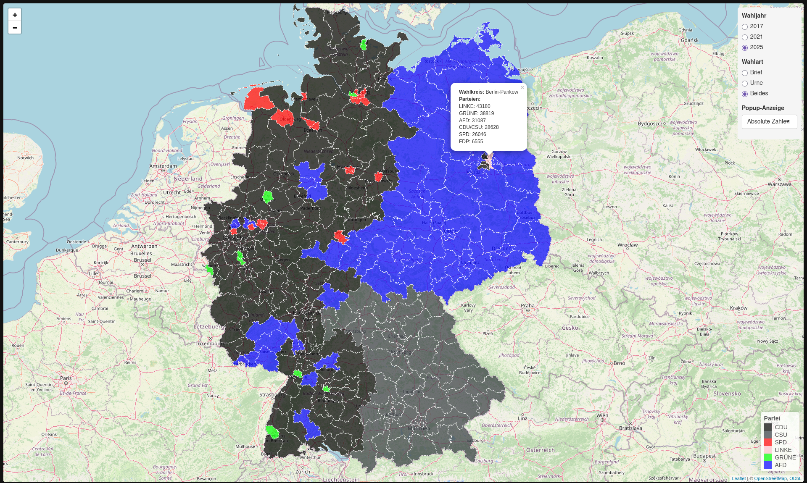

Analyse Briefwahlen
Projekt für das Bootcamp “Beyond Data” für die FH Wedel.
Daten wurden von Bundeswahlleiterin
als CSV Daten heruntergeladen und für uns passend verarbeitet.
- Bereinigung
- NA Werte werden entfernt
- Erst-stimme wurde entfernt
- M | D | O wurde zu männlich geändert
- Formatierungen Standardisieren (Die Linke zu LINKE)
- Gruppierung
- Briefwähler für Land und Bund jeweils in ein Dataframe
zusammengefasst
- Nach Bundesländern und Wahlkreisen zusammengefasst
- Verarbeitete CSV Daten gespeichert
- Filterung und Bearbeitung der Dataframes
- Ein Zentrales Dataframe aus allen anderen zusammengeführt
- Filterfunktionen geschrieben um das Hauptdataframe dynamisch nach
unseren Anforderungen zu Filtern
- Plots und Grafiken
- Aus dem gefilterten Hauptdataframe passende Diagramme und
Visualisierungen erstellt
- Torten Diagramme für Männliche/Weibliche Wahlbeteiligung
- Säulen Diagramme für Parteiwahlergebnisse
- Säulen Diagramme für meisten Briefwähler
- Interaktive Karte
- Server und Ui Dateien erstellt
- Ui: UI Elemente in der Oberen Linken Ecke erstellt
- Server: Karte wird von Leaflet gefetched und es werden farbige
Polygons basierend auf den Wahlergebnissen angewendet
- Filterung der Karte kann durch die UI Elemente geändert
werden(Absolute vs Prozentuale Zahlen)
